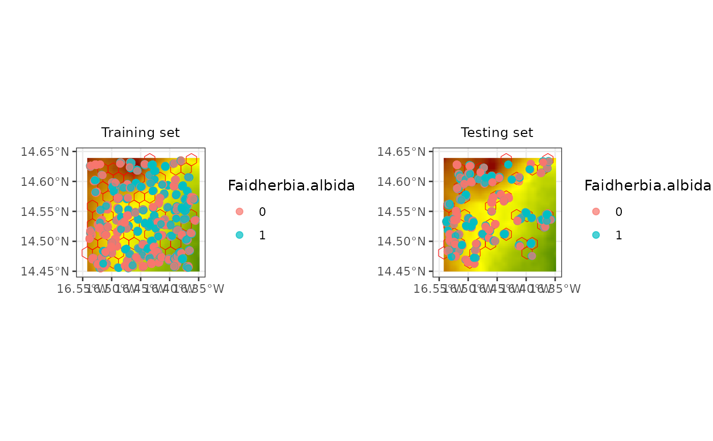

Visualises the placement of a chosen fold and the distribution of the species data across training and testing sets, on top of a background raster. Useful for inspecting the folds produced by blockCV.
Arguments
- blocks
A cross-validation object from blockCV: either a
cv_spatial(or othercv_*) object, or a legacySpatialBlockobject.- rasterLayer
A raster::Raster or terra::SpatRaster object used as the background map (only the first layer is drawn).
- speciesData
A simple features (
sf) orSpatial*object holding the species data, in the same order as the data used to buildblocks.- num
Integer. Index of the fold to display as the test set, between 1 and the number of folds.
Value
A combined plot (via cowplot::plot_grid()) showing the
training and testing sets for the selected fold.
Details
Both the current blockCV interface (version 3.0 and later: objects
returned by cv_spatial(), cv_cluster(), cv_buffer(), cv_nndm(),
...) and the legacy SpatialBlock objects returned by spatialBlock()
in blockCV < 3.0 are supported. When the object carries spatial
blocks (as cv_spatial() and spatialBlock() do), the blocks of the
selected fold are outlined in red.
Examples
# \donttest{
if (requireNamespace("blockCV", quietly = TRUE) &&
utils::packageVersion("blockCV") >= "3.0.0") {
r <- raster::raster(system.file("extdata", "bio1.tif", package = "sdmApp"))
occ <- utils::read.csv2(system.file("extdata", "Niakhar.csv",
package = "sdmApp"))
pa_data <- sf::st_as_sf(occ, coords = c("X_WGS84", "Y_WGS84"),
crs = 4326)
pa_data <- pa_data["Faidherbia.albida"]
cv <- blockCV::cv_spatial(x = pa_data, column = "Faidherbia.albida",
r = r, size = 2000, k = 3, iteration = 20,
plot = FALSE, progress = FALSE,
report = FALSE)
sdmApp_fold_Explorer(cv, r, pa_data, num = 1)
}

# }